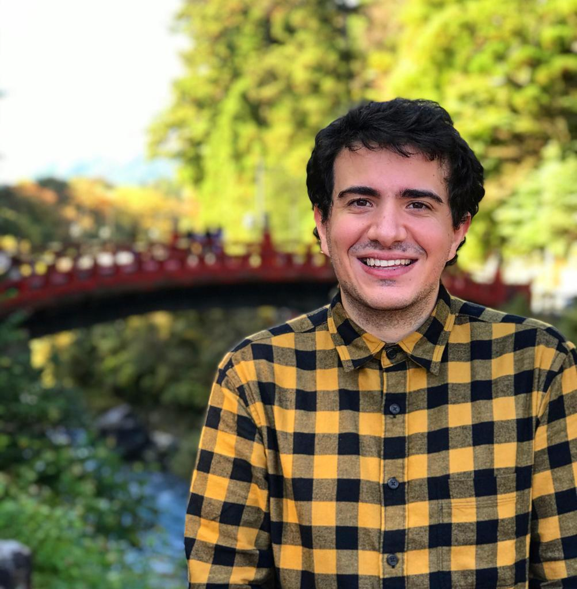
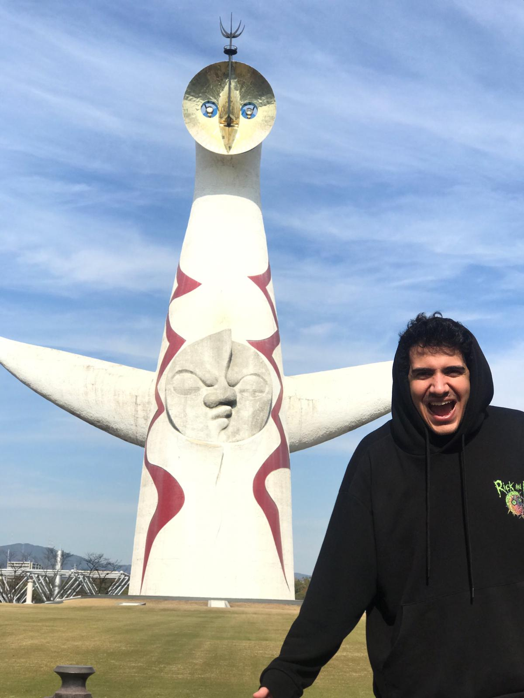

Bienvenidos a mi página web. Mi nombre es Gaspar-Juan De La Ossa Carreño y tengo 26 años. En esta página podréis encontrar qué hobbies tengo, qué experiencia laboral tengo y qué estudié a lo largo de estos años.
Estudié el Grado de Medios Audiovisuales en la universidad Tecnocampus de Mataró. Allí fue donde tuve mi primer contacto con el mundo de la programación.
Poco después, decidí inscribirme en un Posgrado de Guión en el ECIB (la Escuela de Cine de Barcelona.
Justo cuando acabé ese posgrado, decidí cumplir mi sueño e irme a vivir a Japón un año. Dónde además aprendí el idioma e hice el examen oficial, llamado Nouken.
En resumidas cuentas:
Todos los trabajos que he tenido han sido relacionados con el ámbito de la Administración
Tengo muchos hobbies, pero la gran mayoría de ellos están relacionados con el ámbito de los audiovisuales y el guion.
Desde que tengo conciencia he estado jugando a todo tipo de juegos. Estoy enamorado de ellos y por eso lo coloco en la primera posición de mi lista de hobbies.
Siempre que puedo, intento ver mínimo un capítulo de una serie o una película al día. Serie preferida? Breaking Bad por supuestísimo!
A que guionista no le gusta leer? Soy un amante de la lectura, en particular del género de Fantasía. Ahora mismo estoy leyendo "Mistborne" de Brandon Sanderson
Fan acérrimo de viajar y disfrutar del mundo. Ojalá poder volver a pasar un año en Japón.
Poder adquirir conocimientos de aplicaciones web y conseguir vivir en Japón gracias a ello.
